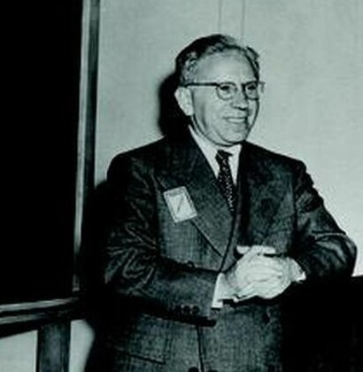

認知バイアス
成功者の共通点を集めれば成功法則が見つかる——その前提そのものが、私たちの判断を歪めている。見えているデータだけを見ていることに、人はなかなか気づけない。
エイブラハム・ウォルドが爆撃機の脆弱性評価に関する覚書を執筆。「帰還した機体」だけを見る統計的錯誤を指摘した。
同年の世界：スターリングラードの戦いが終結。連合軍がシチリアに上陸。ワルシャワ・ゲットーで蜂起が起きた年でもある。
「見えないもの」を数える技術。ウォルドの覚書は軍の機密扱いとなり、公開されたのは1980年のことだった。彼自身は1950年、インドでの講演旅行中に飛行機事故で亡くなっている。
成功した起業家の本を読んだことがあるだろう。早起きをしていた。大学を中退していた。リスクを恐れなかった。共通点を見つけると、そこに法則があるように思える。
しかし、同じように早起きをし、大学を中退し、リスクを恐れなかった人が何万人もいることを、私たちは知らない。なぜなら、彼らの本は出版されないからだ。失敗した人のインタビューは記事にならない。消えた会社の社名は誰も覚えていない。
成功者だけを見て法則を導くとき、私たちはすでに間違えている。
爆撃機の弾痕データを自分の目で切り替え、「見えていないもの」がどれほど判断を歪めるかを体感する。成功法則の裏にある見えない失敗に、手を動かして気づく。
1943年。アメリカの爆撃機は、ヨーロッパ上空で次々と撃ち落とされていた。帰還率の低下に焦った軍は、機体に装甲を追加することを検討した。しかし装甲は重い。全体を覆えば飛行性能が著しく落ちる。問題は「どこに装甲を貼るか」だった。
軍はコロンビア大学に設置された統計研究グループ（SRG）に助言を求めた。SRGのディレクター、W・アレン・ウォリスが後に語ったところによれば、このグループは「人数と質の両面で、史上最も優秀な統計家集団」だった。メンバーには後にノーベル経済学賞を受賞するミルトン・フリードマンとジョージ・スティグラーも含まれていた。しかし、この集団の中で最も鋭い頭脳と評されたのは、ハンガリー出身の数学者エイブラハム・ウォルドエイブラハム・ウォルド（Abraham Wald, 1902–1950）
ハンガリー生まれの数学者・統計学者。逐次分析の創始者でもある。ナチスの迫害を逃れて1938年に渡米し、コロンビア大学で研究を続けた。だった。
上面から見た爆撃機の模式図。暗い赤の点が帰還機に見られた弾痕で、胴体・翼・尾翼に集中している。エンジンと操縦席の周辺にはほとんど弾痕がない——撃たれた機体は帰還できなかったからだ。
軍は帰還した爆撃機を調べ、弾痕の分布を記録した。胴体と翼に被弾が集中していた。結論は明快に思えた——弾痕の多い場所に装甲を貼ればいい。しかしウォルドは、その結論をひっくり返した。装甲を貼るべきは、弾痕の少ない場所だ。

エイブラハム・ウォルド
Abraham Wald, 1902–1950
ハンガリー（現ルーマニア・クルージュ＝ナポカ）生まれの数学者。正統派ユダヤ教徒の家庭で育ち、安息日の制約から初等・中等教育を家庭で受けた。ウィーン大学で博士号を取得したが、反ユダヤ主義のため大学職を得られず、1938年にナチスの併合を逃れて渡米。コロンビア大学で統計研究に没頭し、逐次分析という新分野を創設した。1950年、インド政府の招待講演中に飛行機事故で妻とともに死去。48歳だった。
ウォルドの論理はこうだ。帰還した機体を調べることができるのは、それが帰還できたからにほかならない。胴体や翼に弾痕が多いのは、そこを撃たれても飛行機は墜落しないという証拠だ。逆に、弾痕が少ないエンジンや操縦席の周辺は、撃たれた機体が帰還できなかったから弾痕データに現れない。見えていないデータの方が致命的な情報を持っている。
帰還した機体だけを見ると、被弾パターンはどう見えるか。トグルを切り替えて、「見えないデータ」が加わったときの変化を確認しよう。
ウォルドの1943年の覚書 "A Method of Estimating Plane Vulnerability Based on Damage of Survivors" に基づく概念的な可視化。実際の弾痕分布は機種や戦域によって異なる。帰還率のデータはウォルドの推定（エンジン被弾時の生存率約60%、胴体被弾時の生存率約95%）を参照。
この逆転の発想が、後に生存者バイアス生存者バイアス（survivorship bias）
選別プロセスを通過した「生存者」だけに注目し、脱落したものを見落とす論理的な誤り。成功例だけを見て法則を導こうとするとき、典型的にこのバイアスが発生する。と呼ばれる概念の原型となった。ウォルドの覚書は軍の機密文書として扱われ、公開されたのは1980年のことだった。
弾痕の話は80年前の戦争の逸話に聞こえるかもしれない。しかし、このバイアスは今この瞬間も、私たちの日常で作動している。書店のビジネス書コーナーを想像してほしい。成功した起業家が共通して持っていた7つの習慣。成功した投資家の10の原則。「なぜ彼らは成功したのか」を分析し、共通項を抽出し、法則化する。それ自体は論理的に見える。
しかし同じ7つの習慣を持ち、同じ10の原則を実践し、それでも失敗した人が何千人いるかは、誰も調べていない。失敗した会社は消滅する。閉店したレストランの看板は撤去される。破産した起業家のインタビュー記事に読者はつかない。成功した店だけが街角に残り、潰れた店は跡形もなく消える——だからレストラン業界は、実際よりずっと成功しやすく見える。ナシーム・タレブナシーム・ニコラス・タレブ（Nassim Nicholas Taleb, 1960–）
レバノン出身の数学者・思想家。著書『ブラック・スワン』『まぐれ』で確率論的思考の重要性を広めた。生存者バイアスを「沈黙の証拠」という概念で説明した。はこの状況を一文で言い当てた。
| 場面 | 見えているもの | 見えていないもの |
|---|---|---|
| ビジネス書 | 成功した起業家の共通点 | 同じ特徴を持ち失敗した何万人 |
| 投資信託 | 現在運用中のファンドの好成績 | 成績不振で閉鎖された数千のファンド |
| 音楽の思い出 | 60年代・70年代の名曲 | 同時代に作られた無数の凡庸な曲 |
| 建築・製品 | 「昔のものは頑丈だ」 | 壊れて捨てられた同時代の製品 |
| 大学中退の成功者 | ゲイツ、ジョブズ、ザッカーバーグ | 中退して成功しなかった数百万人 |
投資の世界は、このバイアスの影響が数字で測れる珍しい分野だ。1996年のエルトン、グルーバー、ブレイクの研究では、投資信託のパフォーマンス評価に消滅したファンドを含めると、平均リターンが大幅に下がることが示された。2013年のヴァンガードの分析では、15年間で投資信託の46%が清算または合併で消滅していた。生き残ったファンドだけを見ていると、投資信託は実際よりもずっと優秀な運用商品に見える。
誤解
成功者に共通するパターンを見つければ、成功の法則がわかる
実際は
同じパターンを持つ失敗者を調べない限り、それが「成功の原因」か「単なる偶然の共通点」かは区別できない
誤解
「昔の製品は丈夫だった」から、昔の技術の方が優れている
実際は
壊れた製品はすでに廃棄されて見えない。今残っているのは、たまたま丈夫だった数%
誤解
生存者バイアスは統計の話であって、自分の日常には関係ない
実際は
転職先の口コミ、ダイエット法の体験談、大学選びの評判——あらゆる「成功例から学ぶ」行為に潜む
生存者バイアスの構造。集団全体から選別プロセスを経て、生き残ったものだけが観測可能になる。脱落したものは「見えない」ため、分析から除外される。
"The cemetery of failed restaurants is very silent."
倒産したレストランの墓場はとても静かだ。——つまり、潰れた店は声を上げられない。残っている店だけを見て「この業界はうまくいく」と思うのは、墓場を見ずに生存者だけを数えているのと同じだ。
— ナシーム・ニコラス・タレブ『ブラック・スワン』（2007年）
ここで、生存者バイアスを自分の判断で体験してみよう。以下に6つの投資ファンドの過去5年間の成績が表示される。簡易的な棒グラフと年平均リターンを見て、「今後も成長しそうな」ファンドを2つ選んでほしい。
どれも右肩上がりに見えるはずだ。その中で「特に良さそうな2つ」を選ぶとき、あなたは何を手がかりにしているだろうか。
6つのファンドから、「今後も有望」だと思うものを2つ選んでください。
アルファ成長ファンド
年平均リターン: +12.4% ／ 運用歴: 8年
グローバル・バリューII
年平均リターン: +9.8% ／ 運用歴: 12年
テクノフロンティア
年平均リターン: +15.2% ／ 運用歴: 5年
安定配当セレクト
年平均リターン: +6.3% ／ 運用歴: 15年
新興国ブリッジ
年平均リターン: +13.7% ／ 運用歴: 6年
インフラ長期投資
年平均リターン: +8.1% ／ 運用歴: 10年
選択数: 0 / 2
あなたが見ていたのは、「今も存続しているファンド」だけだ。
実は、同じ期間に運用されていたファンドは全部で15本あった。残りの9本は成績不振で清算・合併され、データベースから消えている。あなたが選択肢として見ることすらできなかったファンドが、全体の60%を占めていた。
消えた9本を含めた全体の年平均リターンは +3.1% だ。あなたが見ていた6本の平均 +10.9% とは大きな開きがある。
あなたが選んだ:
どれを選んでも「悪くない選択」に見えただろう。それは当然だ——悪い選択肢はすでに消えていたのだから。残ったファンドだけを見て「投資信託は優秀だ」と判断するのは、帰還した爆撃機だけを見て「胴体に装甲を貼ろう」と判断するのと、構造的にまったく同じだ。
この体験は生存者バイアスの構造を体感するための架空シナリオ。実際のファンド運用データではない。ただし、15年間で投資信託の46%が消滅するという数値はヴァンガードの2013年分析に基づく実際の統計。
ここで「自分は引っかからなかった」と思った人もいるだろう。しかしポイントは、正しいファンドを選べたかどうかではない。選択肢が最初から偏っていたことに、選ぶ前に気づけたかどうかだ。「このデータは全体のうちのどの部分を見ているのか」という問いが浮かばない限り、生存者バイアスは静かに判断を歪め続ける。
生存者バイアスは単純なメカニズムで動いている。理解するのは簡単だ。しかし「理解できること」と「回避できること」は別問題で、その溝は思ったよりも深い。
あらゆる分野に選別プロセスが存在する。市場競争、自然淘汰、審査、試験。この段階で、集団は「通過した者」と「脱落した者」に分かれる。ここまでは事実の記述であり、バイアスはまだ発生していない。
日常の例: 転職サイトの口コミは、その会社に入れた人の声だ。書類で落ちた人の体験談は存在しない。面接で不合格になった人の感想も載っていない。口コミを読んでいる時点で、すでに選別後のデータだけを見ている。
選別プロセスを通過しなかった者は、多くの場合、文字通り消える。閉店した店の看板は撤去され、清算された投資信託はデータベースから削除され、落選した論文は学術誌に載らない。これは意図的な隠蔽ではなく、「存在しなくなったものは記録されない」という構造的な問題だ。
日常の例: 「昔の音楽は良かった」という感覚。1960年代に作られた曲は膨大だが、今も聴かれているのは名曲だけだ。凡庸な曲は忘れ去られ、プレイリストに入らない。残ったものだけを聴いて「あの時代は音楽のレベルが高かった」と感じるのは、脱落した曲が見えないからだ。
生き残ったものだけを観察し、そこから「法則」を抽出する。これがバイアスの完成段階だ。成功者だけを調べて「リスクを取ることが成功の鍵」と結論づける。しかし、リスクを取って失敗した人は調査対象に入っていない。見えているデータが全体を代表していないのに、全体に当てはまる法則として語られる。
日常の例: 「喫煙者の祖父が90歳まで生きた」という話を聞いて、喫煙のリスクを軽く見る。しかし、喫煙によって早世した何千人の話は聞こえてこない。長生きした喫煙者は「生存者」であり、例外中の例外かもしれない。
生存者バイアスという名前は20世紀のものだが、この問題に気づいた人は古代から存在した。以下の年表で、● は生存者バイアスに直接関わる出来事、○ は関連する出来事を示す。
紀元前1世紀頃
ディアゴラスの反論
難破を免れた者たちの奉納画を見せられたディアゴラスは、「では、溺れて死んだ者たちの絵はどこにある？」と問い返した。キケロが『神々の本性について』の中で紹介したこの逸話は、記録に残る最古の生存者バイアスへの指摘とされる。
1620
フランシス・ベーコン『ノヴム・オルガヌム』
ベーコンは人間の知性が「肯定的な事例」に引きずられやすいことを指摘した。嵐の中で祈って助かった人は記録に残るが、祈って死んだ人は沈黙する。確証バイアスと生存者バイアスが交差する地点。
1943
ウォルドの覚書
エイブラハム・ウォルドがコロンビア大学SRGで爆撃機の脆弱性評価に関する覚書を執筆。帰還機のデータだけでは正しい結論が出せないことを数学的に示した。覚書は軍の機密扱いとなった。
1980–1981
ウォルドの覚書が公開される
海軍分析センター（CNA）がウォルドの1943年の覚書を出版。同時期にマンゲルとサマニエゴが学術論文として再評価した。「生存者バイアス」の概念が学術界で広く知られるきっかけとなった。
1996
投資信託の生存者バイアスが数値化される
エルトン、グルーバー、ブレイクが Review of Financial Studies に論文を発表。消滅したファンドを含めると、投資信託のパフォーマンス評価が大幅に変わることを実証した。
2005
「なぜ出版された研究結果の大半は誤りなのか」
スタンフォード大学のジョン・イオアニディスが画期的な論文を発表。出版バイアス——陽性結果のみが論文になりやすいこと——が科学研究全体を歪めていると指摘した。生存者バイアスの科学版。
生存者バイアスの核心は、データの不在にある。見えているものではなく、見えていないものが判断を歪めている。そして厄介なことに、「見えていないもの」は定義上、気づくのが難しい。弾痕のない部分にこそ致命的な情報があったように、沈黙している部分にこそ重要な真実が隠れている。
"The advice business is a monopoly run by survivors. When something becomes a non-survivor, it is either completely eliminated, or whatever voice it has is muted to zero."
アドバイスというビジネスは生存者が独占している。何かが非生存者になったとき、それは完全に消去されるか、その声はゼロにまで消される。
— デイヴィッド・マクレイニー『You Are Not So Smart』（2013年）
では、このバイアスに対してできることはあるだろうか。「知っているだけで防げる」と言えたら楽だが、そうはいかない。確証バイアスの記事でも触れた通り、認知バイアスは自覚だけでは消えない。ただし、環境を整えることで影響を減らすことはできる。
対処法①: プレモーテムプレモーテム（pre-mortem）
プロジェクトを始める前に「これが失敗したとしたら、何が原因だったか」を想像する手法。心理学者ゲイリー・クラインが提唱。失敗を事前にシミュレーションすることで、見えていないリスクに目を向ける。を行う。何かを始める前に「もしこれが失敗したとしたら、原因は何だったか」を具体的に書き出す。成功事例を集める前に、失敗のシナリオを先に考える。万能ではないが、「見えていないもの」に意識を向ける強制力がある。
対処法②: 脱落者のデータを探す。成功事例を見たとき、「同じことをして失敗した人はいないか」と問う。投資判断なら、消滅したファンドも含めたデータベースを使う。ダイエット法なら、途中でやめた人の割合を調べる。この一手間が、判断の偏りを大きく補正する。ただし、脱落者のデータは構造的に見つけにくい。だからこそ意識的に探す必要がある。
対処法③: ベースレートベースレート（base rate）
ある結果が母集団全体でどのくらいの確率で起きるかを示す数値。「大学中退者のうち億万長者になった割合」のように、全体像から見た確率を確認することで、成功例だけに引きずられることを防げる。を確認する。「大学中退の成功者がいる」と聞いたら、まず「大学中退者全体のうち何%が経済的に成功しているか」を調べる。個別の成功談に飛びつく前に、母集団の全体像を確認する習慣をつける。
私はこれらの対処法を知っているが、正直に言えば、自分がどれだけ実践できているか自信がない。「成功した起業家の本」を読んで心が動いたことは何度もある。知っているだけでは足りない。でも、知らないよりはずっとましだ——少なくとも、ウォルドが弾痕を見たように、「ここに何かが足りない」と立ち止まる瞬間は作れる。
文化への登場
ジョーダン・エレンバーグ『How Not to Be Wrong』（2014年）
数学者エレンバーグがウォルドの爆撃機の逸話を一般向けに紹介し、生存者バイアスの認知度を大きく広めた。この本の冒頭章がきっかけで、弾痕のイラストがインターネット上で広く共有されるようになった。
ナシーム・タレブ『ブラック・スワン』『まぐれ』
タレブは生存者バイアスを「沈黙の証拠（silent evidence）」と呼び、私たちが見ている成功談がいかに偏ったサンプルであるかを繰り返し論じた。「倒産したレストランの墓場」の比喩はこの分野で最も有名な一節。
「オール・アメリカン」──Me-109との空中衝突で尾部がほぼ切断されたB-17F。1943年2月、北アフリカ上空。この機体はアルジェリアのビスクラ基地まで飛び、無事に着陸した。ウォルドが見ていたのは、こうして帰ってきた機体の損傷だった。帰ってこなかった機体の損傷ではなく。
A Method of Estimating Plane Vulnerability Based on Damage of Survivors
すべてはここから始まった。軍の機密だった覚書が37年後に公開されたもの。数式は本格的だが、冒頭の問題設定だけ読めば、ウォルドの思考の切れ味が伝わる。「帰還した機体のデータだけで脆弱性を推定する」というアプローチは、今読んでも鮮やかだ。
Abraham Wald's Work on Aircraft Survivability
ウォルドの覚書を現代の統計学の文脈で再評価した論文。ウォルドが実際に何を計算し、何を仮定していたかが丁寧に解説されている。インターネット上の「弾痕の逸話」がどこまで正確で、どこから脚色なのかを知りたい人に。
Survivorship Bias and Mutual Fund Performance
生存者バイアスが投資信託のリターン評価をどれだけ歪めるかを数値で示した研究。消滅したファンドを含めると平均リターンが大幅に下がるという結果は、金融業界に衝撃を与えた。「データの不在」が実際のお金にどう影響するかを知る格好の入口。
Why Most Published Research Findings Are False
史上最も引用された医学論文のひとつ。出版バイアス出版バイアス（publication bias）
「効果あり」の結果が出た研究は論文として発表されやすく、「効果なし」の結果は発表されにくい傾向。生存者バイアスの科学研究版とも言える。——つまり「陽性結果だけが出版される」構造が、科学研究全体をどう歪めているかを論じた。生存者バイアスが学術界に何をしているかを知ると、背筋が寒くなる。オープンアクセス。